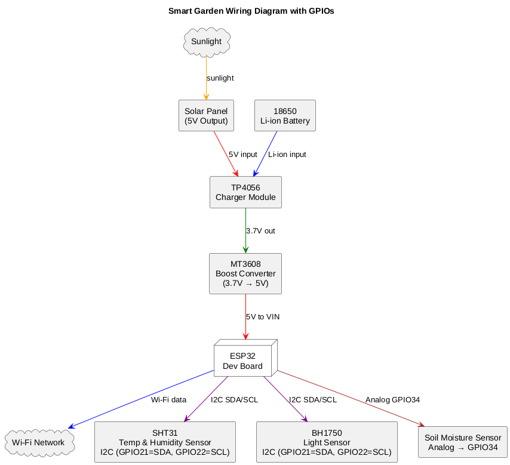
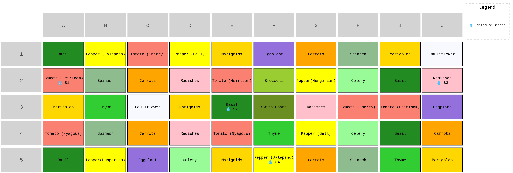

This is an ESP32-powered smart garden system designed for small-scale agriculture monitoring. It integrates IoT sensors (soil moisture, temperature, humidity, light) with solar power and AI-ready architecture for future expansion.
| Component | Description |
|----------------------|---------------------------------------|
| ESP32 Dev Board | Main microcontroller with Wi-Fi |
| SHT31 | Temperature + humidity sensor |
| BH1750 | Light intensity sensor (lux) |
| Soil Moisture Sensor | Capacitive type (analog) |
| TP4056 | Li-ion battery charger module |
| MT3608 | Boost converter (3.7V → 5V) |
| 18650 Battery | Power source |
| Solar Panel (5V 1W+) | Recharges battery |
sensors/ directorysmart-garden/
├── firmware/
│ ├── main/
│ │ └── main.ino
│ └── sensors/ # Modular .h/.cpp for each sensor (optional)
├── data/ # Logs or collected sensor data (CSV, optional)
├── docs/ # Diagrams, wiring notes, planning
├── .gitignore
└── README.md
$ git clone https://github.com/yourusername/smart-garden.git
Open main.ino in the Arduino IDE.
Install dependencies using Library Manager:
BH1750
Adafruit_SHT31
Wire
Connect ESP32 via USB and upload the sketch.
Sensor pin assignments are configured in main.ino.
Power circuit requires proper MT3608 voltage adjustment (set to 5.0V before connecting to ESP32).
Long-term use will require weatherproof enclosures and efficient deep sleep cycling.
Add SD card logging
Add deep sleep & wake-on-interrupt
MQTT or RESTful cloud integration
Build a Node-RED or Grafana dashboard
Train a lightweight ML model for predictive irrigation


MIT License. Use freely with attribution.